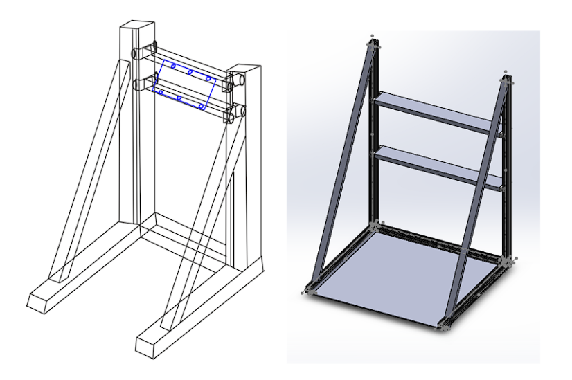
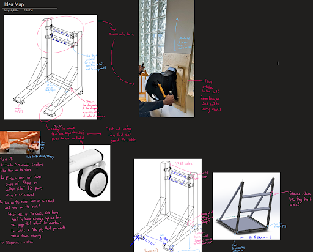
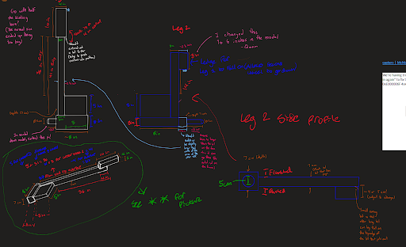
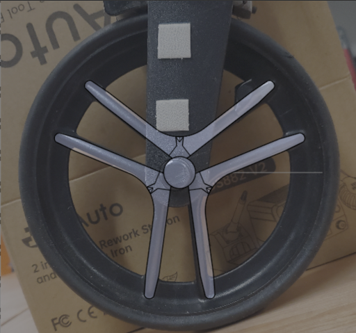
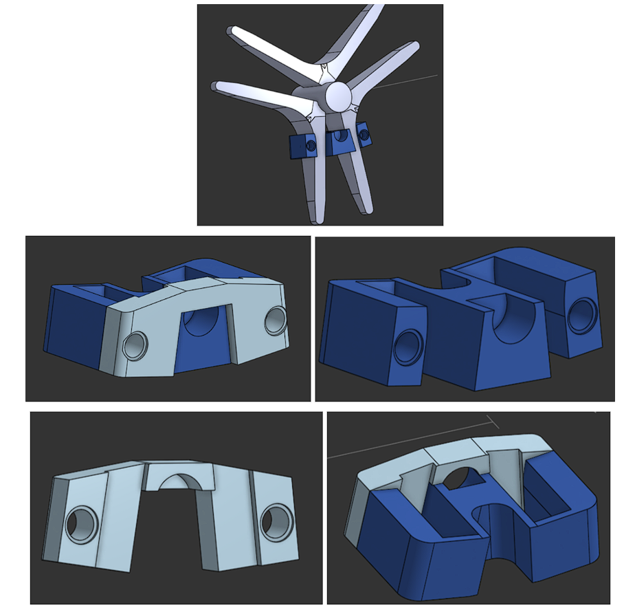
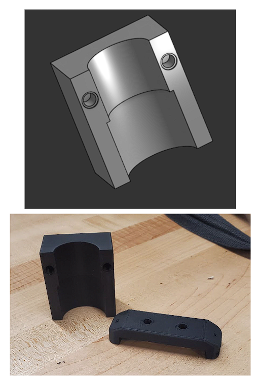
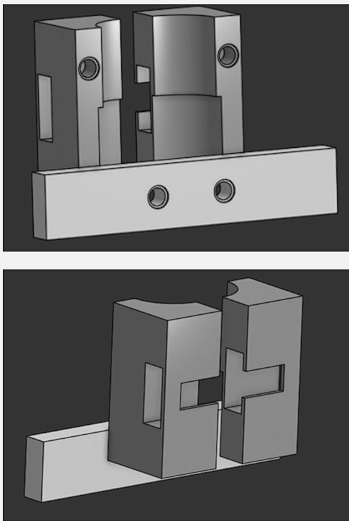

Neuro-rehab for upper extremities.
My role: Mechanical Team Member
The focus of this club project was to create an adaptable and inclusive therapy for individuals in neuro rehabilitation to improve their upper extremity mobility and cardiovascular endurance. This system was to mount a bike trainer onto a frame that could adjust the trainer to fit the user’s height. The bike trainer was to be used as the main handcycle system. The nine person mechanical team in BMERIT (Biomedical Engineering Research and Innovation Team) was separated into three subteams (each with three members): Frame, Lifting, and Mounting.
The Frame subteam was tasked with designing the overarching structure that would allow for the attachment of the other subteams’ components and handcycle, while being easy to assemble and easy for the patient to maneuver in. The Lifting subteam focused on designing a method of moving the bike trainer to adjust to a variety of users, which would be able to hold the weight of the remaining hanging components. The Mounting subteam created methods to mount the bike trainer to a plate, which would then mount onto the Frame and Lifting assembly. This included designing clamps to hold the bike trainer in place.
Ideation
This project was the very first club project that I worked on. When i joined the club, I was assigned to the frame subteam. I joined at a time when designs were being revised and ideation for a new frame was in progress. I suggested using a shared Onenote notebook to allow for more collaborative sketching and drawing. This Onenote notebook acted like a Google Docs document, but for sketching. It allowed for everyone to be able to sketch collectively, and see each other's contributions in almost real-time. The Onenote document did increase the pace of ideation, and made it easier to share ideas as a team.
 The following sketch was a concept design to allow the frame to have removable castors. The design of these castor plates was based off of a YouTube video where the uploader created castor plates for a workbench. Rough ideas for the dimensions were obtained based on pictures and the initial frame design, and they were used to create the rough sketches of the castor plates. This rough sketch was then used to model the castor plates. However, after safety considerations and a discussion with our sponsor, it was decided that the plates would be unsafe and difficult to use. Instead, it was decided to use a combination of castor wheels with leveling feet to allow for the frame to be stabilized when it was in use.

The CAD design was created when the CAD model of the frame was created. The main idea for the frame was to use aluminum t-slot extrusions, as they had simple to use hardware while being lightweight and strong. This kept the design easy to assemble, easy to upgrade, and easy to order replacement components for. A general design was in mind, so an initial CAD model was created.
Initial CAD Modelling
[Showcase initial CAD designs, unused wheel mounts, and talk about what happened in summer].
[More chance to talk, also showcase the initial FEA simultion].
[More chance to talk]
Building the Frame
[Talk about ordering the t-slot extrusions from 80/20 and assembling the frame, realizing the tipping problem irl and adjusting the design so that it didn't tip over.].
[More chance to talk].
[More chance to talk].
Revisiting CAD and Machining
[Talk about what happened over reading week, where both EJ and I remade the model, brought in the tacx scan into the model, made the contest video in solidworks (maybe also showcase the video here or send link to bmerit website (or mention that its in the bmerit website).].
[Also talk about machining the lifting plates and remaking the drawings for it and the lower actuator plate so that they were easy to use when machining.].
Clicking on the images will just redirect you to this same page.